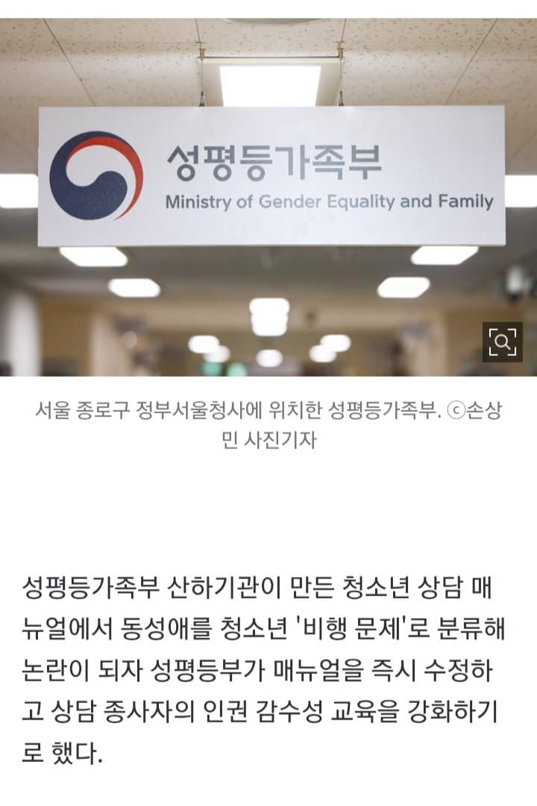
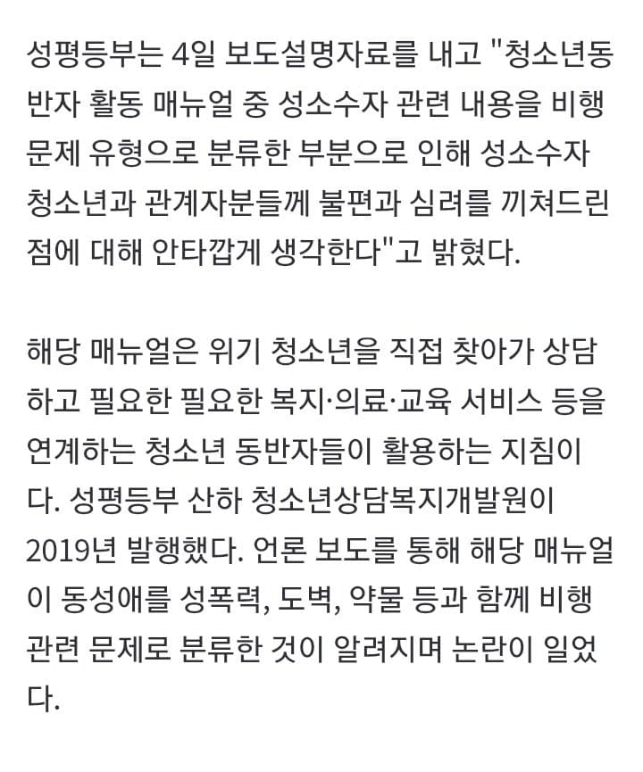
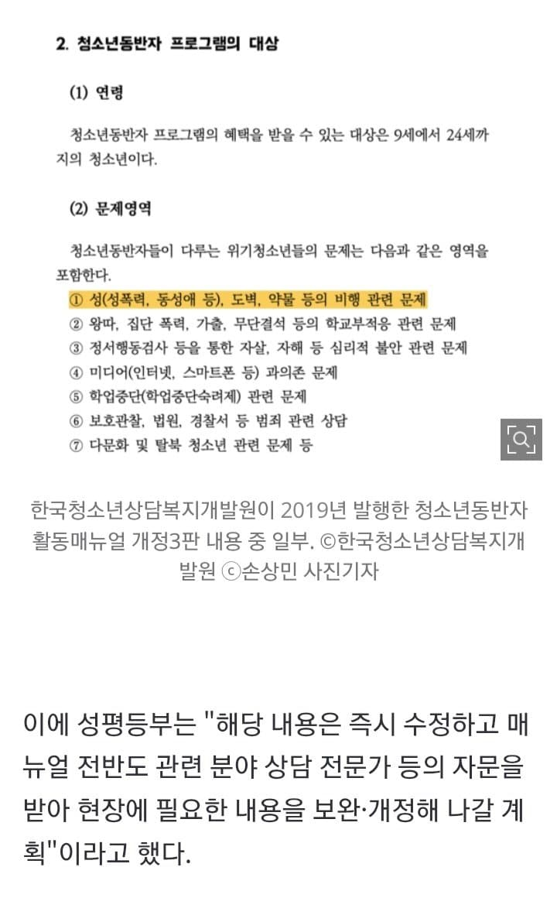
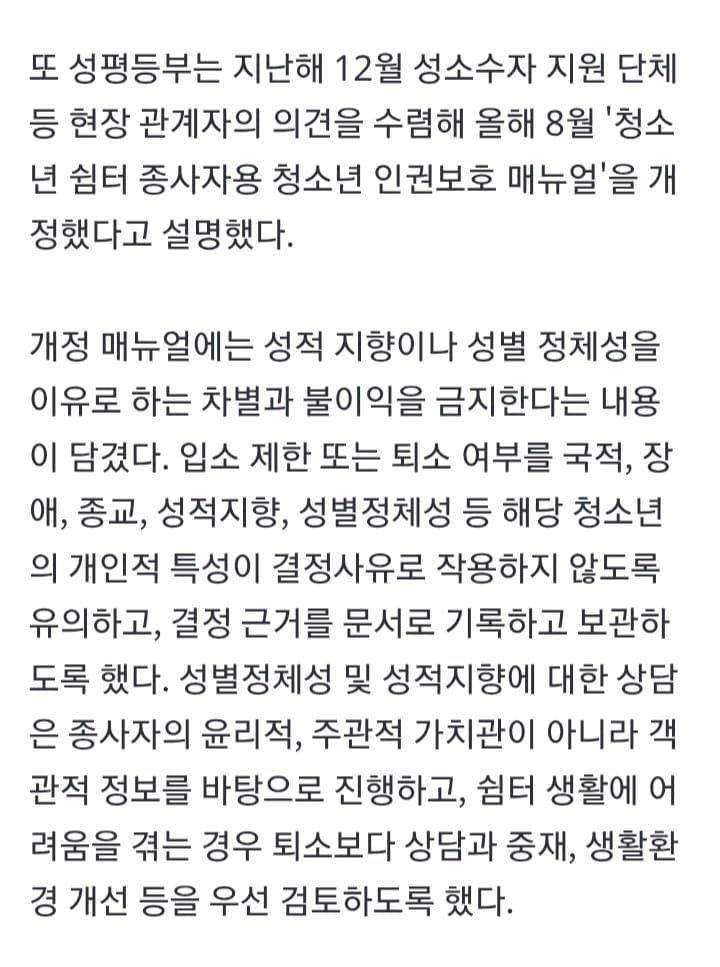
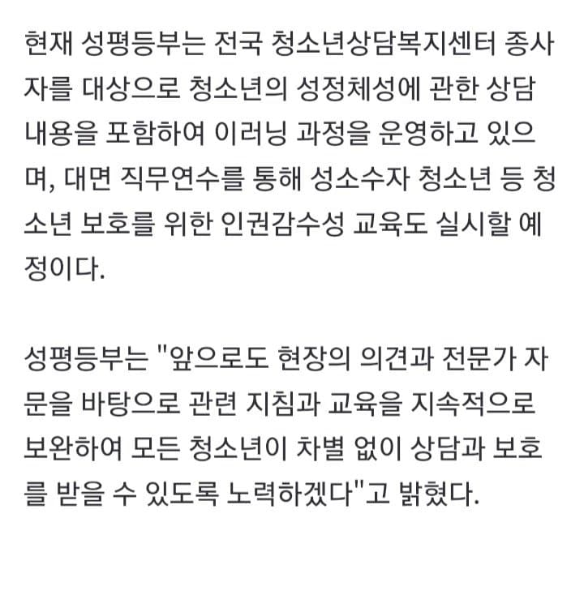

https://n.news.naver.com/article/310/0000141471?cds=news_edit “동성애는 ‘비행’” 청소년 상담 매뉴얼 논란… 성평등부 “즉시 수정”성평등가족부 산하기관이 만든 청소년 상담 매뉴얼에서 동성애를 청소년 '비행 문제'로 분류해 논란이 되자 성평등부가 매뉴얼을 즉시 수정하고 상담 종사자의 인권 감수성 교육을 강화하기로 했다. 성평등부는 4일 보도설명자n.news.naver.com출처: 러시아-우크라이나 갤러리 [원본 보기]

댓글
댓글 보관 대기 중입니다. 원문 응답 오류가 있으면 다음 실행에서 다시 수집합니다.